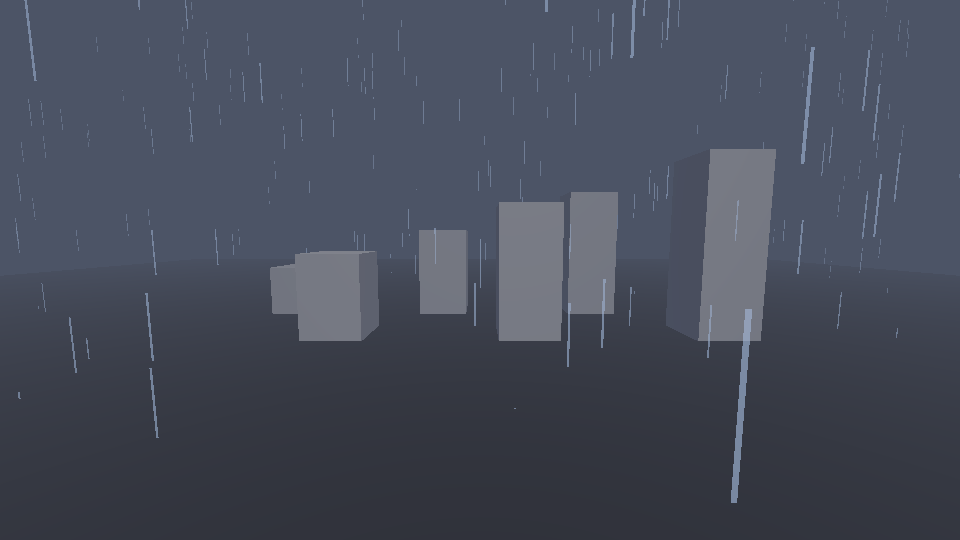
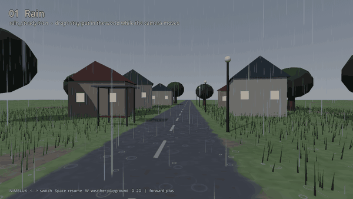
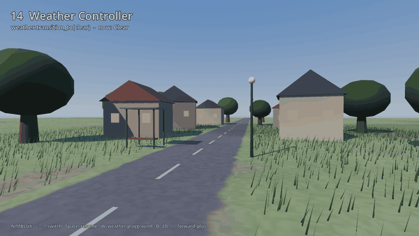

How to make rain in Godot 4
Short version: rain is one GPUParticles3D that follows the camera. A flat box emitter 28 m across sits 8 m above the camera, each drop is a quad 2 cm wide and 60 cm tall that turns to face the camera around the Y axis only, drops leave at 14 to 18 m/s straight down, and the material is unshaded and about a third opaque. Move the emitter with the camera every frame and the rain is everywhere you look and nowhere you don't. Below is that in about 40 lines, then snow, drizzle and fog, and the three things this setup can't do.
The 40-line rain
Add a Node3D anywhere in the scene, attach this script, run. It finds the active camera on its own.

extends Node3D
## Rain around the camera: one GPUParticles3D with stretched quads that follows the camera.
@export var area := 14.0
@export var amount := 1500
var _p: GPUParticles3D
func _ready() -> void:
_p = GPUParticles3D.new()
_p.amount = amount
_p.lifetime = 1.0
_p.visibility_aabb = AABB(Vector3(-area, -area * 2.0, -area), Vector3(area * 2.0, area * 4.0, area * 2.0))
var pm := ParticleProcessMaterial.new()
pm.emission_shape = ParticleProcessMaterial.EMISSION_SHAPE_BOX
pm.emission_box_extents = Vector3(area, 1.0, area)
pm.direction = Vector3.DOWN
pm.spread = 0.0
pm.initial_velocity_min = 14.0
pm.initial_velocity_max = 18.0
pm.gravity = Vector3(0.0, -4.0, 0.0)
_p.process_material = pm
var m := StandardMaterial3D.new()
m.shading_mode = BaseMaterial3D.SHADING_MODE_UNSHADED
m.transparency = BaseMaterial3D.TRANSPARENCY_ALPHA
m.albedo_color = Color(0.75, 0.85, 1.0, 0.35)
m.billboard_mode = BaseMaterial3D.BILLBOARD_FIXED_Y
m.billboard_keep_scale = true
var quad := QuadMesh.new()
quad.size = Vector2(0.02, 0.6)
quad.material = m
_p.draw_pass_1 = quad
add_child(_p)
func _process(_delta: float) -> void:
var cam := get_viewport().get_camera_3d()
if cam:
_p.global_position = cam.global_position + Vector3(0.0, 8.0, 0.0)
Why it works
| Setting | What it does |
|---|---|
| Emitter follows the camera | Particles are simulated in world space by default (local_coords is off), so moving the emitter doesn't drag the drops already in the air. New drops appear above wherever the camera has got to. |
A big visibility_aabb | Godot culls the whole emitter when its bounding box leaves the view. The default box is small and sits at the node, which is 8 m above the camera, so without this line the rain disappears the moment you look down. |
Tall thin quad, BILLBOARD_FIXED_Y | A 2 cm by 60 cm quad is a drop's motion blur drawn as geometry. Fixed-Y billboarding turns it to face you but keeps it upright, so streaks stay vertical from every angle. |
| Speed 14 to 18 m/s, no spread | Real rain falls at roughly 9 m/s. Faster than that looks right on screen because the streaks are already stretched. The range gives a little variety without the drops crossing. |
| Unshaded, 35% alpha | Drops are mostly transparent and catch no light at this size. Lit drops come out as grey sticks. |
| Lifetime 1 s | At 16 m/s a drop travels 16 m: from 8 m above the camera to 8 m below. Any longer and you're simulating drops under the floor. |
Variations
Snow is the same emitter slowed down: a square quad of 8 cm, velocity 1 to 2 m/s, lifetime 6, amount 800, turbulence_enabled on the process material so flakes wander, and BILLBOARD_ENABLED instead of fixed Y. Drizzle is amount 400 and alpha 0.2. A downpour is 4000 and a slightly wider quad. Fog that works on every renderer is fog_enabled on the Environment with fog_density around 0.05, which is what the screenshot uses. Volumetric fog looks better but is Forward+ only.
Where it runs out
Shelter. The moment the camera walks under a roof or into a tunnel, it's still raining inside, because the emitter has no idea where walls are. Fixing that means either a collision setup on the particles, or a second system that knows which volumes are covered and kills drops inside them, plus no splashes and no ripples under cover.
Splashes. Rain that hits the ground without a splash reads as falling threads. Each splash is a tiny burst at the impact point, which needs the impact point, which this emitter doesn't have. A sub-emitter on collision can do it, at the cost of making the whole thing far more expensive.
Wind. Rain in wind falls slanted and the streaks slant with it, and so do snow and fog. Fixed-Y billboards can't tilt, so slanted streaks mean a custom shader for the quad, and then the same wind has to drive every other weather effect in the scene or they look like they're in different weather.
Or drop in a preset
The pack I sell for this, Weather VFX for Godot 4 (NIMBLUX), has rain, snow, fog, wind, sandstorms, cloud shadows and storm lightning: 9 3D nodes, 4 2D nodes, a weather controller with 12 weather profiles and 32 presets. It covers the three things above. A shelter node stops rain, ripples and splashes under roofs and indoors. Rain comes with splashes and ripples. One wind is shared by rain, snow, fog, wind lines and leaves, with gusts and changing direction. Every effect is one static mesh of quads or ribbons whose vertex shader computes each element's position from its index, a seed and the time, wraps it inside the volume around the camera and faces it to the camera, so the CPU only sets a few shader parameters per frame and nothing hitches on first use. It's tested on Godot 4.4.1 and 4.7.2 on Forward+, Mobile and Compatibility.

var rain := NimbluxRain3D.new()
add_child(rain)
rain.set_amount_smooth(1.0, 5.0) # drizzle to downpour over 5 seconds
var weather := NimbluxWeather3D.new()
add_child(weather)
weather.transition_to(preload("res://addons/nimblux_fx/profiles/thunderstorm.tres"), 10.0)

There's a free version with the 3D rain from the full pack, same look, so you can check it in your own project first. The full pack's itch page has a browser demo of every preset.